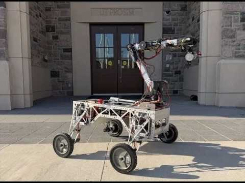
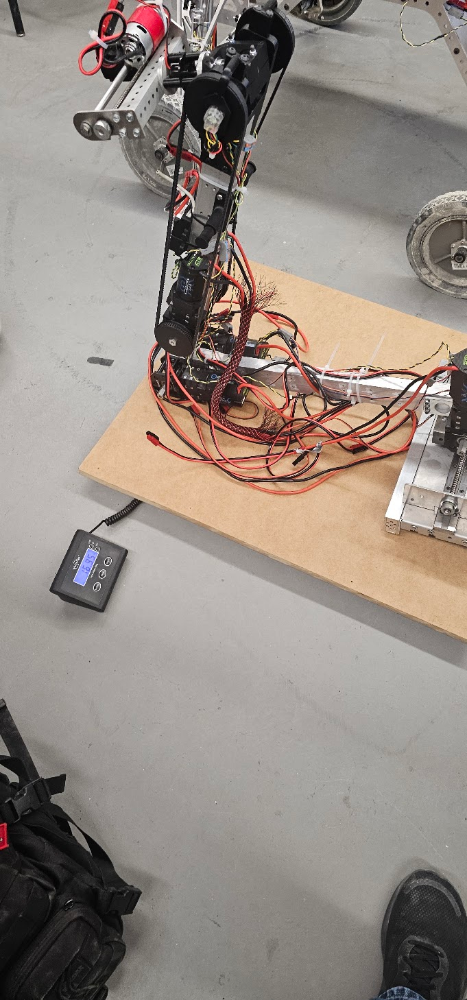
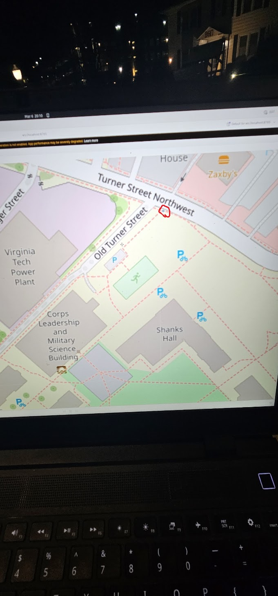
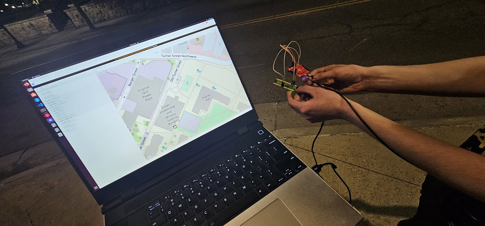

ANUBIS was Astrobotics' first attempt at ever building a robot for the University Rover Challenge. After our experiences in NASA Lunabotics we were looking for a new challenge. URC is an interesting competition for many reasons but especially since your Rover has to do science with an on-board laboratory. Our team did not end up qualifying on our first attempt although we were close which lead to the AZRAEL project. However, ANUBIS provided many valuable lessons especially in the realm of suspension design, arm design, and arm control. SAR video
For AZRAEL I served as the Astrobotics team lead and was responsible for systems engineering and integration. I was additionally on the software team and responsible for much of the controls code.
Specifically, I was responsible for:
Eventually I will add more pictures of the full robot here but apparently I didn't save many in my google photos

One of the issues that ANUBIS had was that as we were designing the arm it was simply too Heavy, the scale was in kg. This was partially caused by motor choice since we were trying to use motors we were familiar with, however these were not optimized for robotic manipulators. Their Gearboxes also had enough backlash that there was a significant difficulty in controlling the arm.

These photos show right after we wrote the GPS driver and were able to show the data in real-time inside of foxglove studio. The logical test was walking from the VT Ware Lab to Mcdonalds. The GPS position remained accurate and did not drop out during this non-rigorous test.